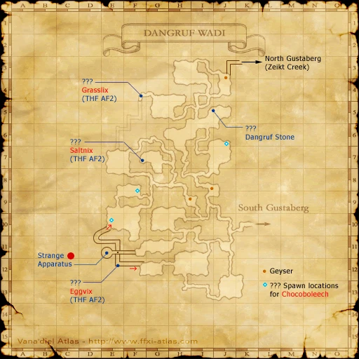

Before you begin
Be allied with Bastok, have Rank 1, and finish the preceding required story steps. Raise Rank Points if the mission is not offered.
People in this mission

Walkthrough
- Accept the mission and speak with Cid in Metalworks (H-8) for the Blue Acidity Tester.
- Enter Dangruf Wadi from South Gustaberg (D-9). At (I-8), ride the geyser to the ledge.
- Check that the key item is now a Red Acidity Tester.
- Report to Cid.
Important notes
- This is a key-item test, not an instruction to defeat the nearby monsters.
Locations and references
| Place / NPC | Location | Reference |
|---|---|---|
| Cid | Metalworks (H-8) | Location reference |
| Geyser | Dangruf Wadi (I-8) | Location reference |
Route maps




Completion and reward
Rank Points
Area maps
Open a zone below, then select a map to enlarge it. Match the named floors and grid coordinates in the steps; these are reference area maps, not a live position tracker.
Metalworks

Dangruf Wadi

South Gustaberg

References
HorizonXI Wiki: Bastok 1-2 · LandSandBoat mission definition
The route summary covers the original story. Other servers’ extra rewards, level-cap settings and Trust rules are not promises of Zenith behavior. Confirm battlefield entry conditions in game.
Additional level-75 reference
|
 Image source
Image sourceRecommended: Level 6+ or a source of Invisible (Status Effect).
Walkthrough
- After accepting the mission, head over to the Metalworks.
- Look for Cid in Cid's Lab. Cid will give you Blue Acidity Tester that you need to use to test the waters of Dangruf Wadi.
- Visit the Dangruf Wadi area, located in the southwestern corner of South Gustaberg.
- Head to the geyser located at (I-8) and stand in it until it propels you to the ledge above.
- Check your key items to make sure the Blue Acidity Tester has changed to a Red Acidity Tester.
- When it turns red, return back to Cid.
Game Description
- Mission Orders
- Assist Chief Engineer Cid in conducting an analysis of the gaseous emissions in the Dangruf Wadi. Meet with Cid for a more detailed explanation.
Adapted from Eden Wiki: A Geological Survey · Contributors and history · CC BY-SA 4.0. Revision 8630. Layout, links and optional background text adapted for Zenith.